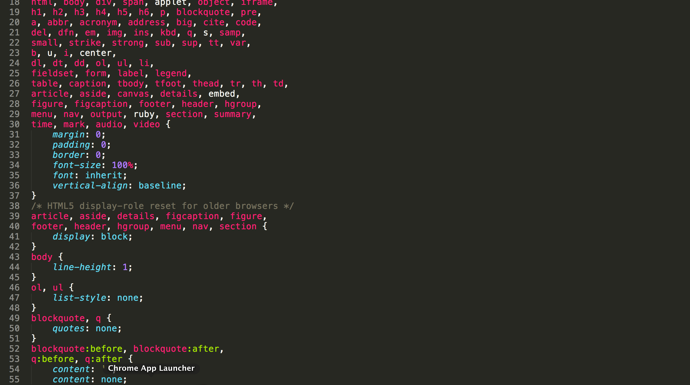

ThinkFul, Musings, Reviews
Coding & Cloning: 3 Months with Thinkful
Posted by Jeya Karthika on .
Hello folks, My 3 months of cloning & coding with ThinkFul's Front-End Web Development course has come to an end. I would say these 3 months have been the most-productive in my learning journey. I have learnt a lot and I have a lot to show for it. Yes, My portfolio is live as of 15th March, 2014 here.
It has been a habit of mine to just sit back and reflect when ever I complete a big project. It kind of helps me to learn from my own experience. This way I am able to make new mistakes instead of the same old ones again. Sometimes it gives me insight into things like how I can be more productive, things I could have done better, etc..
So, when Aatash Patel left a comment asking me to share my experience with ThinkFul, I thought I will take the time write out my reflections as a blog post so that more people can get an idea about the course.
I will not go through the general course structure and how it works because, Javier Collades has already given a very comprehensive review on his blog. You can read it here. This will be more about why I did the course, how it helped me, & the challenges I faced along the way.
Why I chose ThinkFul?
I was not a complete beginner nor was I new to programming. So, why did I do it? I have been self-learning for atleast 3 months. I was not even sure if I was absorbing anything I was learning.
I felt like I knew most of the pieces of the puzzle but didnt't know which piece to start with nor how to put them together as a whole.
That's when I realized I needed someone to guide me a little bit and point out where I go wrong and nudge me in the right direction.
Basically, I needed a mentor and a course to structure my learning. While searching, I coundn't find any dev bootcamps or course providers who are located in brisbane. That's when I found thinkful, and liked the fact that it covered all my requirements.
By choosing ThinkFul, I got a Structured Learning, Weekly Mentor Sessions, Flexible learning options and a Supportive Community, all with in a small budget.
What have I learnt?
On the technical front,
- HTML5
- CSS3
- Javascript
- jQuery
- AJAX/JSON
- Git and
- Design Fundamentals
But, more importantly, to put the puzzle together from start to finish. I have learnt to,
- plan the website before coding
- make design decisions
- create good user experiences
- observe object-oriented coding practices
- practice commenting the code
- identify cross-browser issues
- create responsive websites
- use devtools to identify and fix issues
Projects Completed with ThinkFul
The projects I have completed as part of this ThinFul Course are linked below so that you can get an idea of what you can achieve with a project-based progressive learning.
A clone of the google home page.
A clone of the old 37 Signal's home page.
A clone of the old 37 Signal's home page revisited with jQuery hover effects and automatically updating day of the week.
Number Seeking game with HTML5, CSS3 & JavaScript. It has now been integrated in to the Thinkful Front End Course syllabus and is being used as the starter template.
A beautiful, minimal shopping list app using HTML5, CSS3, Javascript & jQuery. Try adding, checking off & deleting items to see the not so subtle animations.
A Quiz web app to test how well you know the HTML colour names using HTML5, CSS3 & Javascript.
Flickr API Hack using AJAX requests to display my amateur photography attempts in a simple & beautiful gallery.
My Portfolio designed & coded from end to end, beginning with site goals, moving onto wireframes, and ultimately to finished product.
Challenges I faced
1. Time
Working full-time left me only a couple of hours everynight and the weekends for my use. So, I ended up adding a recurring alert to learn web development for atleast 2 hours each day.
2. Commitment
There were days when I just wanted to relax after a full day's work and not to get back to learning. On those days I relaxed a bit and did some design inspiration browsing and reading latest tech news, blogs, etc..
3. Perfection
I have a trait which pushes me to do nothing short of perfection. I had to learn that its okay to sometimes just leave the project imperfect and move on to learn the next thing.
4. Making Mistakes
I was afraid to make mistakes initially. I tend to work on it until I felt there were no bugs at all before posting it to the forum for feedback. But, I have started accepting the fact that it is alright to make mistakes mainly because the community is very supportive and everyone tries to help each other and the mentors do not judge but provide constructive feedbacks, suggestions and pointers to resolve or improve your code.
5. Learning new things
I love learning new things. But, it is always harder to get started. I managed that by supplementing ThinkFul resources with Tree House, Code school, reading blogs or books or watching videos. I allow myself time for the new concept to sink in.
Discussing with my Mentor, Sunil Williams was the best course of action in these cases because he will explain those concepts in simple terms. If I went and read up on the concept after, it will make a lot more sense.
How to make the best of it?
1. Be Curious
I guess I have already given you a fair idea of what you could be learning in the course but, as Darrell Silver says, Thinkful tries
to inspire students to expose the curiosity that they have.
The more curious you are, the more you will be able to get out of this course.
2. Use the mentor sessions wisely.
You are literally having access to an experienced industry professional who is willing to help you learn.
My mentor, Sunil Williams gave me insights into his freelancing life, projects and how he debugs issues with his code, etc.. I was able to observe how he works logically on complex pieces of codes.
My sessions pretty much always went outside the curriculum and we discuss the concepts or the technologies I heard/read about that week and he introduces me to new stuff I could integrate to my code and at the end of the session gives me a summary of our discussions and all the new tools and resources he shared with me. This gives me something to refer back and keep in track of what I need to do and learn that week.
3. Practice
For each project try and implement atleast one new piece of technology that you don't understand yet. That way, you will be able to understand and get a complete grasp of that technology by the time you finish the project. And, only when you practice, you will learn more.
4. Learn the design unit in paralel
I would recommend doing the design component in parallel with the other components so that you can use those concepts when you plan for each project. This way when you do your portfolio, you will be familiar with the design process and you can do the best design to showcase all your projects.
Why should you go for it?
In summary, I would really recommend Thinkful because you get the following,
- Syllabus
- Mentors
- Community & Office Hours
- Budget
- Project-based learning
- Progressive learning
- Good for newbies
- Flexibility
This is the type of course where you can only learn as much as you want to. It will be more or less based on the type of commitment and passion you have.
So, yeah go for it. You will not regret it.
Wow! This could be the longest post I have ever written. But, I really wanted to cover the questions that have been put forward to me. I am willing to answer any specific questions you might have regarding my learning journey with ThinkFul. Just leave a comment below or hit me up on twitter.